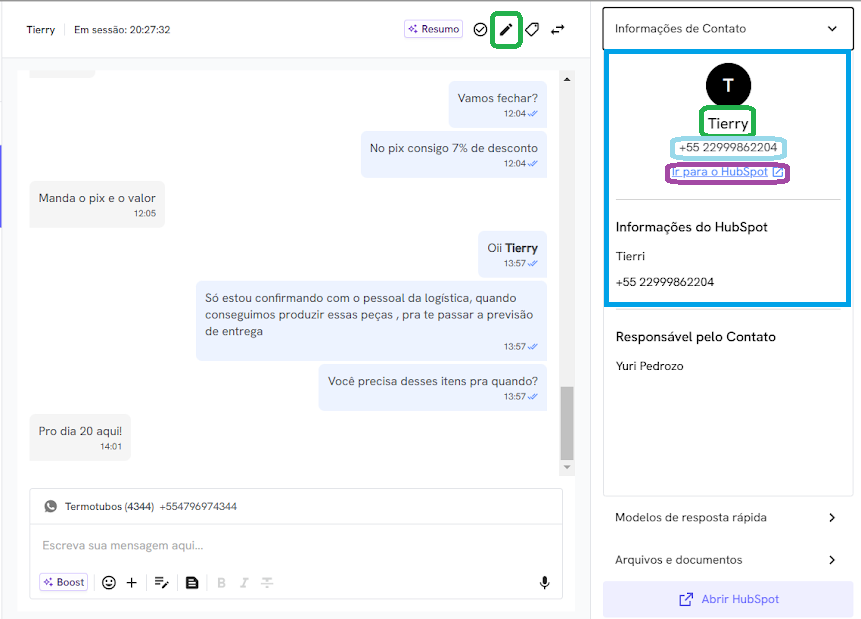

Após coletar as informações necessárias para o cadastro do cliente(CNPJ/E-Mail),
você precisará criar um novo contato no HubSpot, acessando "Informações de Contato"
como na imagem acima.

Etapa 2: Acesse a aba de Contatos
Na barra lateral direita, após clicar em "Informações de Contato", verá o nome do contato,
poderá editá-lo selecionando o ícone do lápis à esquerda.
Em seguida, pode acessar o menu do contato clicando em "Ir para o Hubspot" que está marcado de roxo ao redor.
Etapa 3: Adicionar informações do cliente.
Ao abrir o menu do cliente, o primeiro passo é alterar o nome, o recomendado é colocar o nome do cliente
e em seguida a empresa de onde ele fala, como no exemplo à cima.
Após isso, precisa inserir o especialista responsável pelo cliente, na propriedade "Proprietário do contato"
Para finalizar, terá que preencher com os dados da empresa, incluindo o CNPJ, pegando todas as informações diretamente do Tiny.